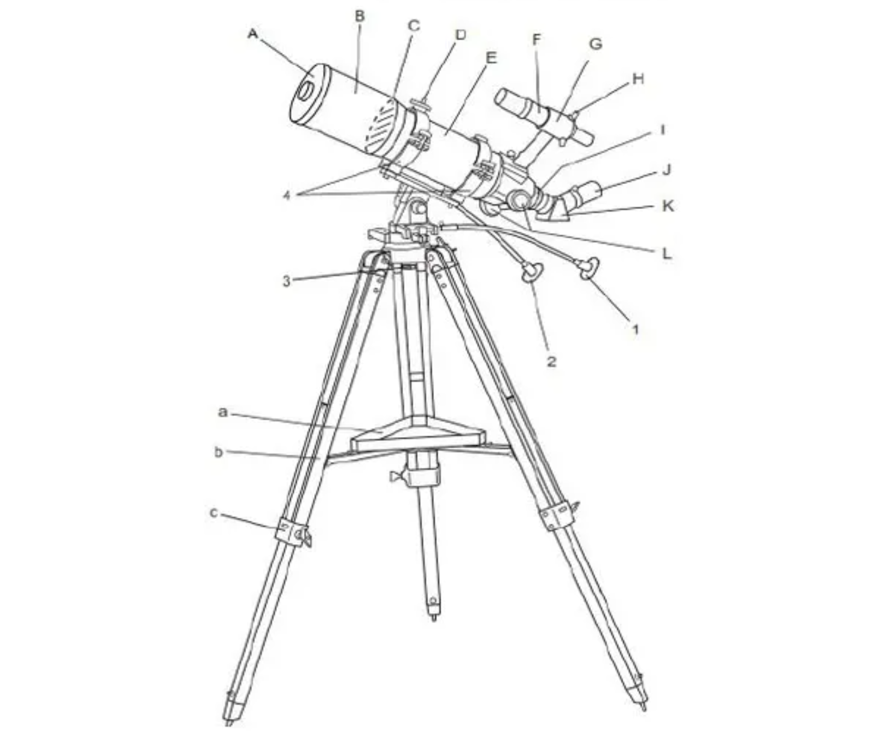

| Judul Praktikum | Merakit teleskop portable dan pointing |
|---|---|
| Hari/Tanggal | Jumat, 20 Fabruari 2026 |
| Lokasi | Laboratorium Teknik 5 ITERA |
| Koordinat | -5.3617497661375255, 105.31084751534713 |
| Cuaca | Cerah |
Pada modul ini praktikan mempelajari proses perakitan teleskop portable, pengenalan komponen-komponen teleskop, serta teknik pointing untuk mengarahkan teleskop ke objek langit yang akan diamati. Praktikan memahami fungsi setiap bagian teleskop, mulai dari tripod, mounting, tabung optik, hingga finder scope yang berperan dalam menunjang kegiatan observasi. Selain itu, praktikan juga berlatih melakukan pointing agar teleskop dapat diarahkan secara tepat ke target pengamatan. Melalui kegiatan ini, praktikan memperoleh pemahaman dasar mengenai pengoperasian teleskop serta pentingnya ketelitian dalam proses observasi astronomi.

| Kode | Nama Bagian | Fungsi |
|---|---|---|
| A | Lensa Objektif | Mengumpulkan cahaya dari objek yang diamati. |
| B | Tabung Optik (OTA) | Tempat komponen optik teleskop berada. |
| C | Cincin Penyangga Depan | Menopang dan mengikat tabung teleskop pada mounting. |
| D | Sekrup Pengunci Cincin | Mengencangkan cincin penyangga tabung. |
| E | Cincin Penyangga Belakang | Menjaga posisi tabung tetap stabil pada mounting. |
| F | Finder Scope | Membantu menemukan objek langit sebelum diamati dengan teleskop utama. |
| G | Dudukan Finder Scope | Tempat pemasangan finder scope. |
| H | Sekrup Penyetel Finder | Mengatur keselarasan finder dengan teleskop utama. |
| I | Focuser | Mengatur fokus agar citra tampak tajam. |
| J | Eyepiece (Okuler) | Tempat mata mengamati citra yang telah diperbesar. |
| K | Diagonal Prism/Mirror | Membelokkan jalur cahaya agar pengamatan lebih nyaman. |
| L | Mounting | Menopang teleskop dan mengatur arah geraknya. |
| 1 | Kenop Penggerak Halus Deklinasi | Menggerakkan teleskop secara presisi pada sumbu deklinasi. |
| 2 | Kenop Penggerak Halus Asensio Rekta | Menggerakkan teleskop secara presisi pada sumbu asensio rekta. |
| 3 | Tripod | Penyangga utama teleskop selama observasi. |
| 4 | Baut Pengikat Tabung | Menghubungkan tabung teleskop dengan mounting. |
| a | Accessory Tray | Tempat menyimpan okuler dan aksesoris lainnya. |
| b | Penyangga Tray | Menambah kestabilan Tripod. |
| c | Pengunci Kaki Tripod | Mengatur dan mengunci panjang kaki Tripod. |